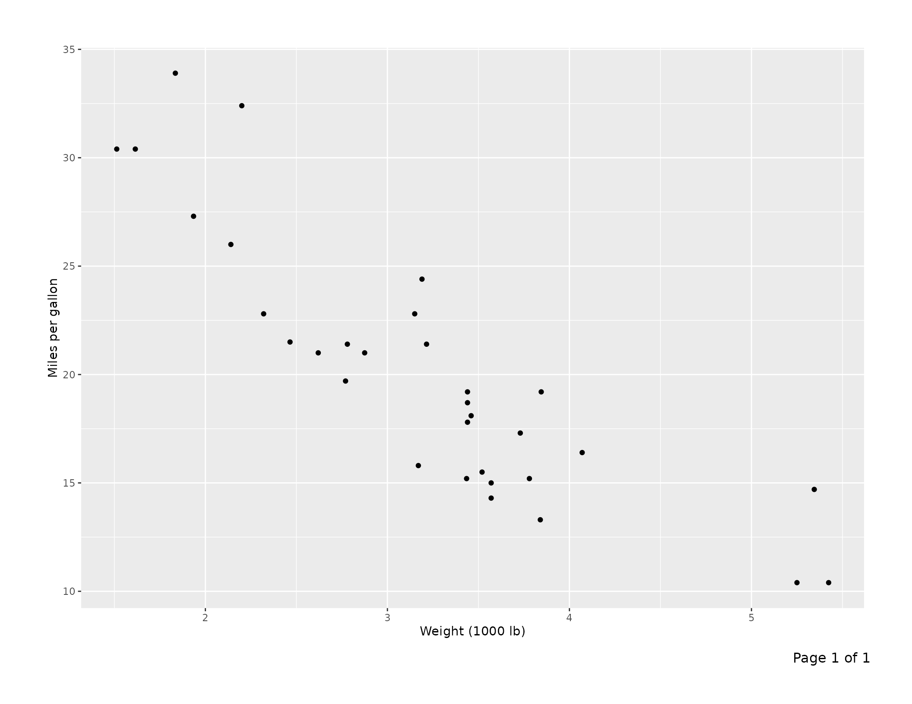
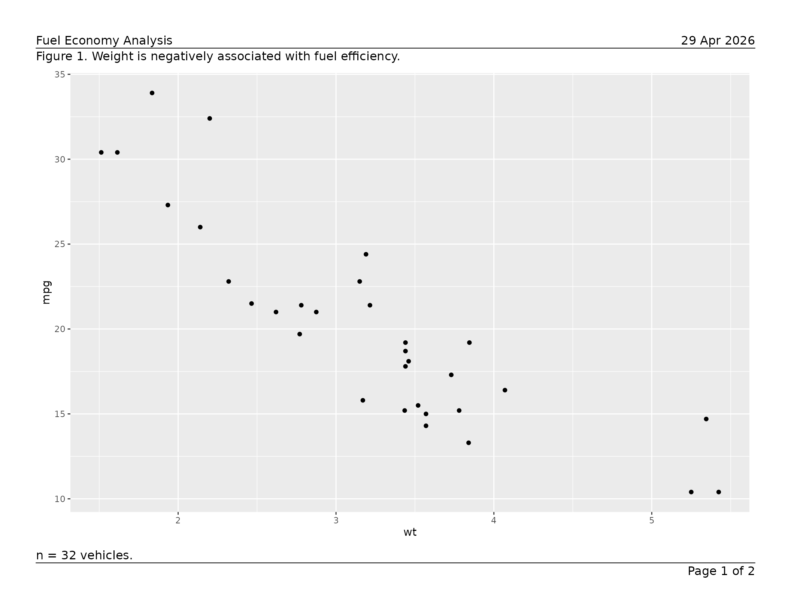
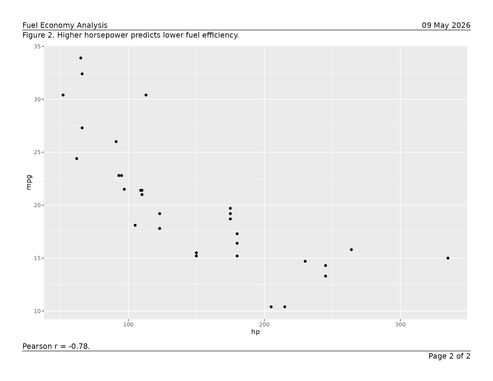
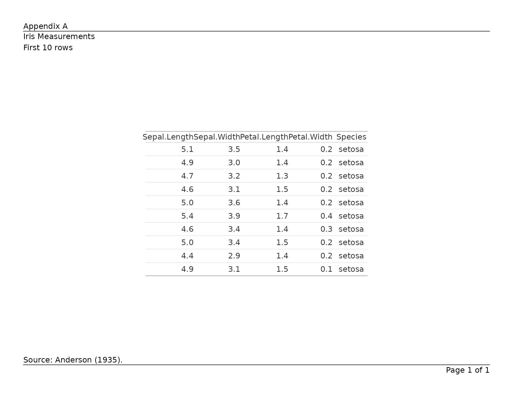
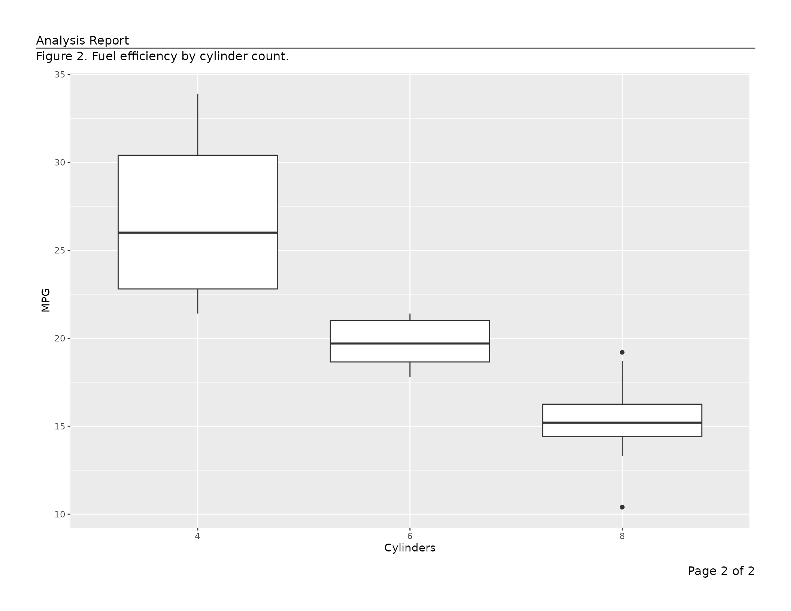
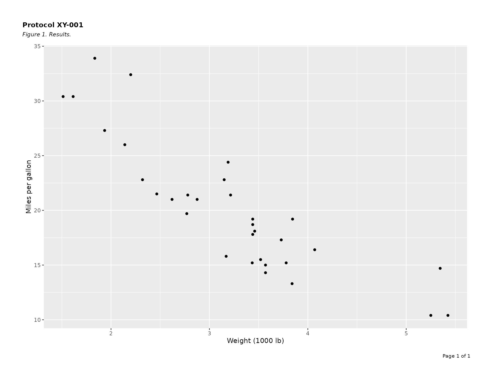
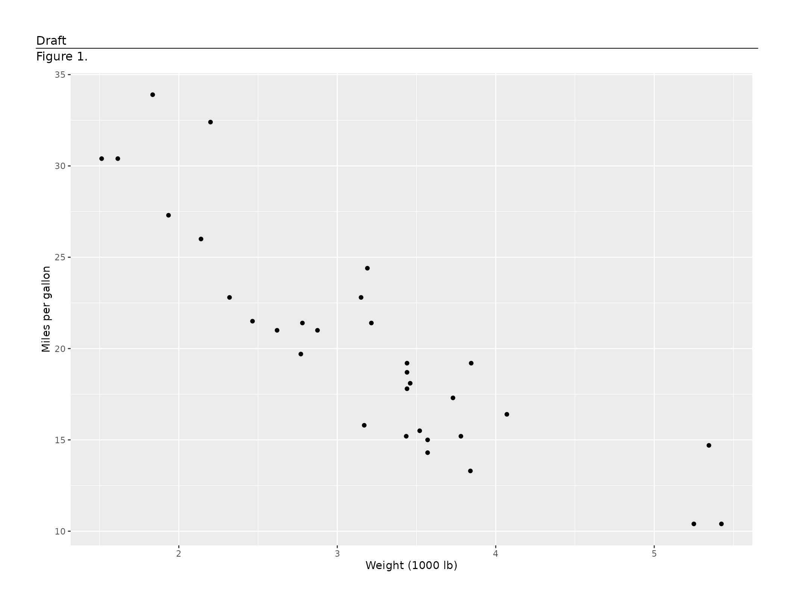

Getting Started with writetfl
writetfl.Rmd
library(writetfl)
library(ggplot2)
library(dplyr)
#>
#> Attaching package: 'dplyr'
#> The following objects are masked from 'package:stats':
#>
#> filter, lag
#> The following objects are masked from 'package:base':
#>
#> intersect, setdiff, setequal, unionwritetfl produces multi-page PDF files from
ggplot2 figures, data-frame tables, gt tables,
rtables tables, flextable tables, and other
grid content with precise, composable page layouts required for clinical
trial TFL deliverables and regulatory submissions.
Each page is divided into up to five vertical sections — header, caption, content, footnote, and footer — whose heights are computed dynamically from live font metrics so that the content area always fills exactly the remaining space. Nothing ever overlaps.
Page layout
Every page follows this structure:
┌─────────────────────────────────────────────────┐ ← page edge
│ (outer margin) │
│ ┌───────────────────────────────────────────┐ │
│ │ header_left header_center header_right │ │ header
│ │ ---------------------------------------- │ │ ← header_rule (optional)
│ │ caption │ │ caption
│ │ │ │
│ │ content (fills remainder) │ │ content
│ │ │ │
│ │ footnote │ │ footnote
│ │ ---------------------------------------- │ │ ← footer_rule (optional)
│ │ footer_left footer_center footer_right │ │ footer
│ └───────────────────────────────────────────┘ │
│ (outer margin) │
└─────────────────────────────────────────────────┘Absent sections and their padding gaps are suppressed entirely — no blank space is reserved for them.
Figures
Pass a single ggplot directly.
"Page 1 of 1" is added to the footer automatically.
p <- ggplot(mtcars, aes(wt, mpg)) +
geom_point() +
labs(x = "Weight (1000 lb)", y = "Miles per gallon")
export_tfl(p, preview = TRUE)
Build a multi-page report by supplying a list of page specs.
Arguments in ... are shared across all pages; values inside
a page’s list element take priority.
pages <- list(
list(
content = ggplot(mtcars, aes(wt, mpg)) + geom_point(),
caption = "Figure 1. Weight is negatively associated with fuel efficiency.",
footnote = "n = 32 vehicles."
),
list(
content = ggplot(mtcars, aes(hp, mpg)) + geom_point(),
caption = "Figure 2. Higher horsepower predicts lower fuel efficiency.",
footnote = "Pearson r = -0.78."
)
)
export_tfl(
pages,
preview = TRUE,
header_left = "Fuel Economy Analysis",
header_right = format(Sys.Date(), "%d %b %Y"),
header_rule = TRUE,
footer_rule = TRUE
)

For the full set of layout controls — separator rules, typography,
multi-line text, overlap detection, preview mode, and more — see
vignette("v01-figure_output").
Data-frame tables
tfl_table() converts a data frame into a paginated table
grob. Pass the result directly to export_tfl().
ae_summary <- data.frame(
system_organ_class = c("Gastrointestinal", "Nervous system", "Skin"),
n_subjects = c(12L, 7L, 4L),
pct = c(24.0, 14.0, 8.0)
)
tbl <- tfl_table(
ae_summary,
col_labels = c(system_organ_class = "System Organ Class",
n_subjects = "n", pct = "(%)"),
col_align = c(system_organ_class = "left",
n_subjects = "right", pct = "right")
)
export_tfl(
tbl,
preview = TRUE,
header_left = "Table 1. Adverse Events by System Organ Class",
footnote = "Percentages are based on the safety population (N = 50)."
)Use dplyr::group_by() to designate row-header columns.
Group columns repeat on every column-split page and suppress repeated
values in consecutive rows.
pk_data <- data.frame(
visit = rep(c("Week 4", "Week 8", "Week 12"), each = 4),
treatment = rep(c("Placebo", "Active 10 mg", "Active 20 mg", "Active 40 mg"), 3),
n = c(48L, 50L, 49L, 51L, 45L, 47L, 48L, 50L, 41L, 43L, 44L, 46L),
mean_auc = c(120.4, 145.2, 178.9, 201.3,
118.7, 148.6, 185.2, 219.4,
115.1, 152.3, 191.7, 228.6),
stringsAsFactors = FALSE
)
pk_data |>
group_by(visit) |>
tfl_table(
col_labels = c(visit = "Visit", treatment = "Treatment",
n = "n", mean_auc = "Mean AUC\n(ng\u00b7h/mL)")
) |>
export_tfl(
preview = 1,
header_left = "Table 2. PK Summary by Visit"
)tfl_table() paginates automatically:
-
Row pagination — rows split across pages with
optional
(continued)markers; groups are kept together where possible. -
Column pagination — columns that exceed the page
width are split across pages; set
balance_col_pages = TRUEto distribute columns evenly. -
Column widths — auto-sized from content, fixed
(
unit()), or relative-weight numeric. -
Word wrapping —
wrap_colsreflows long text within a fixed column width.
For the complete table reference — column specs, continuation
messages, cell padding, line height, and more — see
vignette("v02-tfl_table_intro").
For table typography and styling, see
vignette("v03-tfl_table_styling").
gt tables
Pass a gt_tbl object directly to
export_tfl(). Title, subtitle, source notes, and footnotes
are extracted into writetfl’s annotation zones so they are not
duplicated. Tables that exceed the page height are automatically
paginated with row group boundaries respected.
library(gt)
tbl <- gt(head(iris, 10)) |>
tab_header(title = "Iris Measurements", subtitle = "First 10 rows") |>
tab_source_note("Source: Anderson (1935).")
export_tfl(tbl, preview = TRUE,
header_left = "Appendix A",
header_rule = TRUE,
footer_rule = TRUE
)
A list of gt_tbl objects produces a multi-page PDF with
one table per page. For the full reference — annotation mapping,
pagination, preserved features, and more — see
vignette("v05-gt_tables").
rtables tables
Pass an rtables VTableTree object directly to
export_tfl(). Main title and subtitles map to writetfl’s
caption; main footer and provenance footer map to the footnote. The
table body is rendered as monospace text via toString().
When a table is too tall for a single page, rtables’ built-in
paginate_table() splits it across pages respecting row
group boundaries.
library(rtables)
#> Loading required package: formatters
#>
#> Attaching package: 'formatters'
#> The following object is masked from 'package:base':
#>
#> %||%
#> Loading required package: magrittr
#>
#> Attaching package: 'rtables'
#> The following object is masked from 'package:utils':
#>
#> str
lyt <- basic_table(
title = "Iris Sepal Length by Species",
main_footer = "Source: Anderson (1935)."
) |>
split_cols_by("Species") |>
analyze("Sepal.Length", mean)
tbl <- build_table(lyt, iris)
export_tfl(tbl, preview = TRUE,
header_left = "Study Report",
header_rule = TRUE,
footer_rule = TRUE
)A list of VTableTree objects produces a multi-page PDF.
Font parameters (rtables_font_family,
rtables_font_size, rtables_lineheight) can be
passed via .... For the full reference see
vignette("v06-rtables").
flextable tables
Pass a flextable object directly to
export_tfl(). Captions (from set_caption())
are extracted into writetfl’s caption zone. Footer rows (from
footnote() or add_footer_lines()) are
extracted into writetfl’s footnote zone. The table is rendered via
gen_grob() with all formatting preserved.
library(flextable)
ft <- flextable(head(iris, 10)) |>
set_caption("Iris Measurements") |>
add_footer_lines("Source: Anderson (1935).")
export_tfl(ft, preview = TRUE,
header_left = "Appendix B",
header_rule = TRUE,
footer_rule = TRUE
)A list of flextable objects produces a multi-page PDF
with one table per page. For the full reference — caption handling,
footnote extraction, pagination, preserved features, and more — see
vignette("v07-flextable").
Multi-page reports
export_tfl() accepts a list of page specifications, so
different figures can coexist in one PDF with per-page captions,
footnotes, or other annotations alongside any shared header and
footer.
export_tfl(
list(
list(content = ggplot(mtcars, aes(wt, mpg)) + geom_point(),
caption = "Figure 1. Weight vs fuel efficiency.",
footnote = "Pearson r = -0.87."),
list(content = ggplot(mtcars, aes(factor(cyl), mpg)) + geom_boxplot() +
labs(x = "Cylinders", y = "MPG"),
caption = "Figure 2. Fuel efficiency by cylinder count.")
),
preview = TRUE,
header_left = "Analysis Report",
header_rule = TRUE
)
tfl_table() objects are passed as the top-level
x argument to export_tfl() rather than inside
a page spec list — the function handles pagination and page construction
automatically in that case.
Key shared features
Automatic page numbering
page_num (default "Page {i} of {n}") fills
footer_right unless a footer_right value is
already set. Use a glue
template or NULL to disable.
export_tfl(pages, file = "numbered.pdf", page_num = "{i} / {n}")
export_tfl(pages, file = "no-numbers.pdf", page_num = NULL)Typography
Pass a bare gpar() to style all annotation text
uniformly, or a named list for section- or element-level control.
Resolution priority (highest wins): element → section → global.
export_tfl(
p,
preview = TRUE,
header_left = "Protocol XY-001",
caption = "Figure 1. Results.",
gp = list(
header = gpar(fontsize = 11, fontface = "bold"),
caption = gpar(fontsize = 9, fontface = "italic"),
footer = gpar(fontsize = 8)
)
)
Preview mode
export_tfl(..., preview = TRUE) draws to the currently
open device without opening or closing a PDF — useful for interactive
layout tuning in RStudio or Positron, and for inline graphics in
vignettes. Pass an integer vector to render specific pages only.
export_tfl_page(
x = list(content = p),
header_left = "Draft",
caption = "Figure 1.",
header_rule = TRUE,
preview = TRUE
)
Vignette index
| Vignette | What it covers |
|---|---|
vignette("writetfl") |
This overview |
vignette("v01-figure_output") |
Full export_tfl() / export_tfl_page()
reference for figures: page dimensions, margins, rules, typography,
overlap detection, preview mode |
vignette("v02-tfl_table_intro") |
tfl_table() in depth: column specs, widths, alignment,
wrapping, row/column pagination, group columns |
vignette("v03-tfl_table_styling") |
Table typography with gp: per-section and per-element
gpar() overrides, cell padding, line height |
vignette("v04-troubleshooting") |
Troubleshooting guide: common errors, debugging layout issues |
vignette("v05-gt_tables") |
Exporting gt tables: annotation extraction, pagination,
preserved features |
vignette("v06-rtables") |
Exporting rtables tables: annotation mapping,
pagination, font control |
vignette("v07-flextable") |
Exporting flextable tables: caption/footnote
extraction, pagination, preserved features |